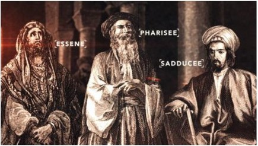

0250 1 Enoch is written, of which an Ethiopic text is later found at Qumran. Themes include for the first time many of the accoutrements of later Christian belief: a solar calendar, angels, heaven and hell, Son of Man existent before creation, judgment after death, resurrection of believers - ideas also reflected in Daniel 12:2.
0230 Synagogues: Though perhaps mentioned by Ezekiel “I will be a comfort to them,” and though Ezra led readings of the Torah, congregational meetings are not regular until the first synagogue, most likely the proseuche - prayer (venue) begun in Egypt during the reign of Ptolemy III, at which meetings there are a priest and an elder (rabbi), where diaspora communities gather to read the Torah under a leader (Acts). Synagogues will not be introduced to Judea until 0070 CE. Access to God is no longer the exclusive prerogative of the priests.
0200 Sadducees (“descendants of Zadok”) believe that people have total free will, that there is no after life (like Epicureans, though here an outgrowth of the Zadokite teaching that one should serve God as though no wage - Heaven - were paid), that written tradition can come only from Moses, that ‘legitimate’ priests must take back their rights from the Hasmoneans. Sadducees are, however, wealthy and alienated from the common people.

0200 Pharisees (Aramaic “separated ones”) believe that some things are determined by fate and others by will, so divine reward/punishment are deserved since we are somewhat responsible. Why then is there no justice? There must be justice in an afterworld - similar to Stoicism, and the oral tradition from Moses, the first “rabbi”; the message attracts the lower classes (quite close to the target demographic of the Christians, so the conflict between Pharisees and Christians will be so bitter). Because of their affinity to the masses, they are authorized to determine Temple practices for Sadducees.
~~~~~~~~